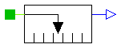
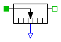

| Name | Description |
|---|---|
| ForceSensor | Ideal sensor to measure the force between two flanges |
| PositionSensor | Ideal sensor to measure the absolute position |
| SpeedSensor | Ideal sensor to measure the absolute velocity |
| AccSensor | Ideal sensor to measure the absolute acceleration |

Measures the absolute position s of a flange in an ideal way and provides the result as output signals (to be further processed with blocks of the Modelica.Blocks library).
Release Notes:
model PositionSensor "Ideal sensor to measure the absolute position"
extends Modelica.Icons.TranslationalSensor;
SI.Position s "Absolute position of flange";
Interfaces.Flange_a flange_a
"(left) flange to be measured (flange axis directed INTO cut plane, e. g. from left to right)";
Modelica.Blocks.Interfaces.OutPort outPort(
final n=1);
equation
s = flange_a.s;
s = outPort.signal[1];
0 = flange_a.f;
end PositionSensor;

Measures the cut-force between two flanges in an ideal way and provides the result as output signal (to be further processed with blocks of the Modelica.Blocks library).
Release Notes:
model ForceSensor "Ideal sensor to measure the force between two flanges" extends Interfaces.RelativeSensor; SI.Force f "force in flange_a and flange_b (f = flange_a.f = -flange_b.f)"; equation flange_a.s = flange_b.s; flange_a.f = f; flange_b.f = -f; f = outPort.signal[1]; end ForceSensor;
Measures the absolute velocity v of a flange in an ideal way and provides the result as output signals (to be further processed with blocks of the Modelica.Blocks library).
Release Notes:
model SpeedSensor "Ideal sensor to measure the absolute velocity"
extends Modelica.Icons.TranslationalSensor;
SI.Position s "Absolute position of flange";
SI.Velocity v "Absolute velocity of flange";
Interfaces.Flange_a flange_a
"(left) flange to be measured (flange axis directed INTO cut plane, e. g. from left to right)";
Modelica.Blocks.Interfaces.OutPort outPort(
final n=1);
equation
s = flange_a.s;
v = der(s);
v = outPort.signal[1];
0 = flange_a.f;
end SpeedSensor;

Measures the absolute acceleration a of a flange in an ideal way and provides the result as output signals (to be further processed with blocks of the Modelica.Blocks library).
Release Notes:
model AccSensor "Ideal sensor to measure the absolute acceleration"
extends Modelica.Icons.TranslationalSensor;
SI.Velocity v "Absolute velocity of flange";
SI.Acceleration a "Absolute acceleration of a flange";
Interfaces.Flange_a flange_a
"(left) flange to be measured (flange axis directed INTO cut plane, e. g. from left to right)";
Modelica.Blocks.Interfaces.OutPort outPort(
final n=1);
equation
v = der(flange_a.s);
a = der(v);
a = outPort.signal[1];
0 = flange_a.f;
end AccSensor;